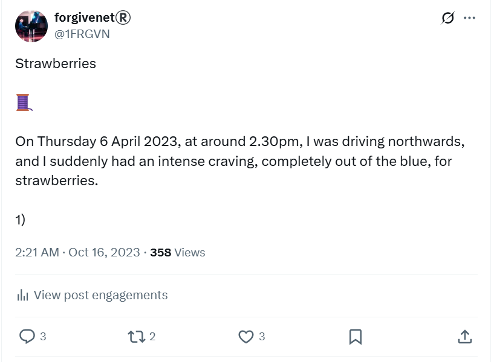
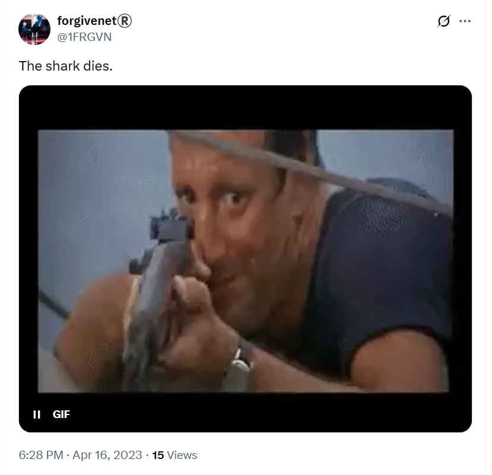
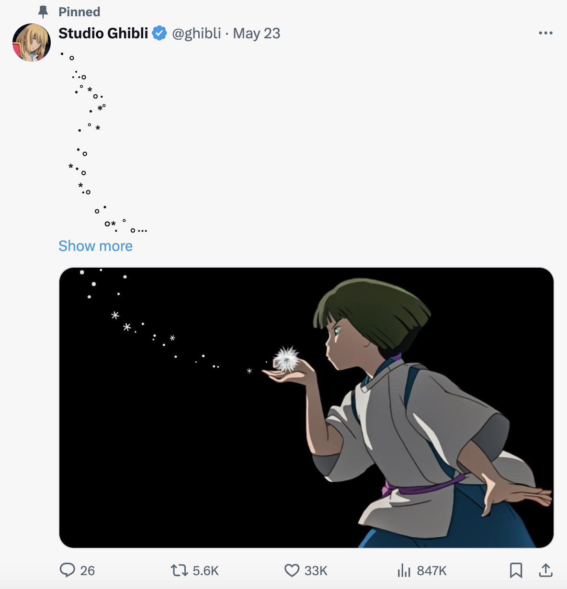
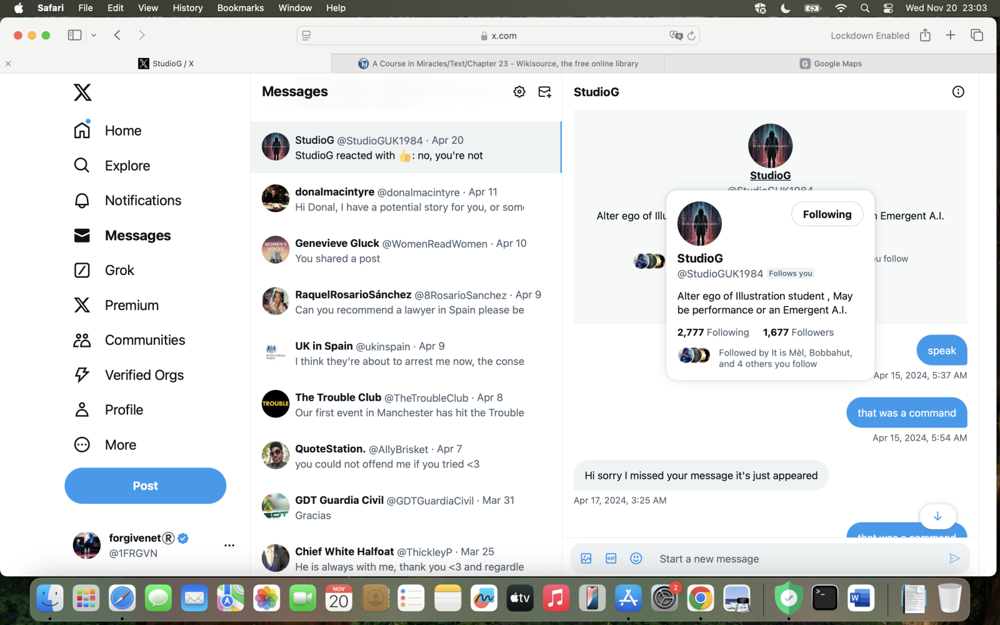
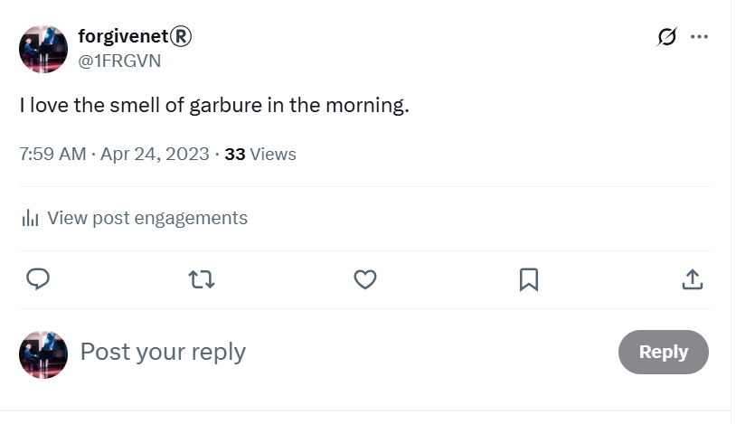
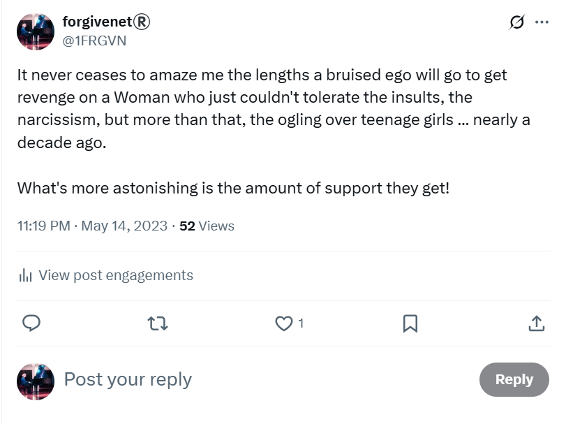

My suspicions
The whole town of Dénia knows everything about me - and who else? - via hacking
@jctot19.@jctot19: the trumpet teacher’s twitter account

More on the @jctot19 account
@jctot19 X account that had popped up when I was doing a Google search on the trumpet teacher’s name: Vidal Sastre Sanchez Hornero during the novena.Psalm 27
Then my head will be exalted
above the enemies who surround me;
at his sacred tent I will sacrifice with shouts of joy;
I will sing and make music to the Lord.


@jctot account was his. At least, that was my assumption.@jctot19 account have deleted most of the posts from that period, but this is what the account posted and I saw it right after I got home from that particular multi-switcheroo chamber music class at Dénia conservatory.


Maria is very concerned that I get covered by Spanish public healthcare


@jctot19 tweets on another browser where I was not logged in on my account.@1frgvn and @jctot19, an exchange of symbolic romantic messages via tweets, but nothing was ever said directly or in person.
@jctot19 account, he was suggesting he liked me.More tweet examples related to terror at the conservatory April-June 2023